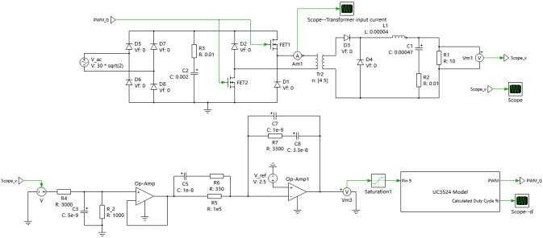
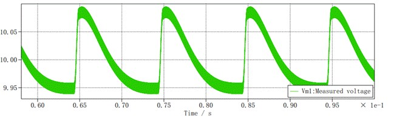
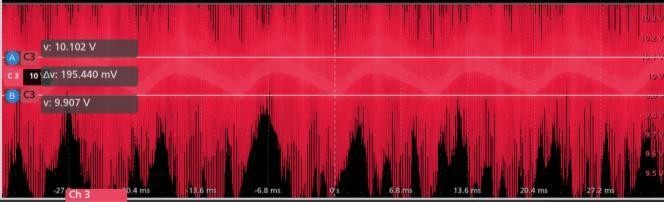
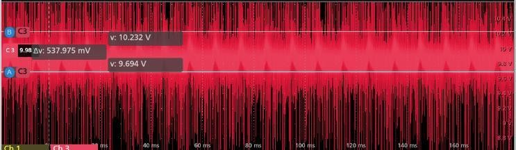

Power electronics
Two-Switch Forward Converter
A group design exploring an isolated 50 W forward converter and regulated 10 V output.
Design objective
The group report targets an isolated 50 W converter with a nominal 10 V output, addressing input ripple and changes in load.
Control and implementation
The report develops Type 3 compensation using the Venable k-factor method and compares it with Type 1 control. Design files include PLECS models, KiCad schematics, board layouts and controller circuitry.
Reported evaluation
The group report describes continuous-conduction operation and suppression of 100 Hz input ripple. The measurements and simulations are presented as documented in the group report.
Simulation and laboratory evidence
The design targets 50 W and a nominal 10 V output. Table 5 reports ripple of 195 mV (Type I) and 265 mV (Type III) at one load, and 988 mV and 537 mV respectively at five loads. Type III therefore improves the reported five-load result, but does not outperform Type I at every tested load.




| Load condition | Type I | Type III |
|---|---|---|
| 1 load | 195 mV | 265 mV |
| 5 loads | 988 mV | 537 mV |